created at 2025-09-21 09:09,updated at 2025-09-21 09:09
🔖 禁用 SMB1
强烈建议关闭，打开Windows機能面板
cmd ⇒ OptionalFeatures.exe
SMB1 可以追溯到20世纪80年代 IBM 和 微软的DOS 时代
距离今天已经有三十多年的时间，当时计算机安全还不存在，它在拦截攻击方面有重大的架构问题
如今版本的 windows 10/11 都默认禁用了 SMB1
🔖 安全使用 SMB 共享的步骤
- 新建一个用户专门用于共享文件的授权，并设置此用户的权限
- 设置网络共享和系统安全的相关设置
- 开启共享，授权指定用户
- 删除 %User% 默认共享
🐻 1. 创建专用的用户
新建一个本地用户，设置只用于 SMB 共享
cmd ⇒ compmgmt.msc 打开计算机管理面板
本地用户和组⇒ 用户⇒ 右键空白处，点击“新用户”
新建账号为 "joker" 的用户为例，相关设置如下：
只用于共享，设置不能更改密码，密码不会过期
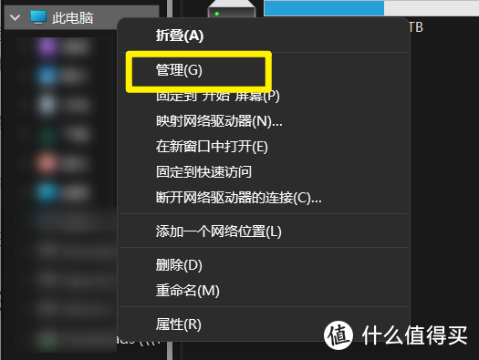
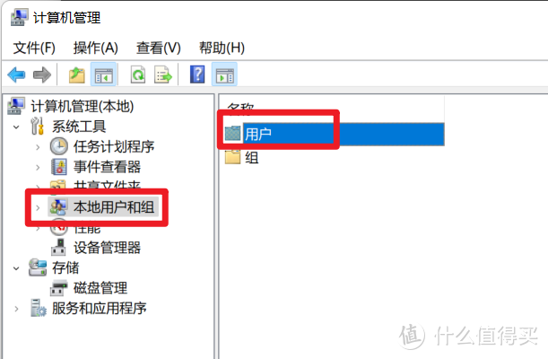
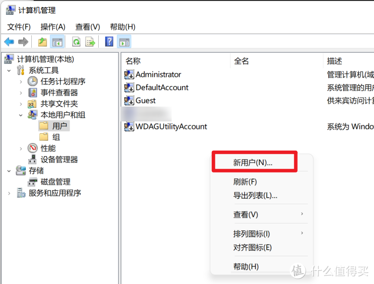
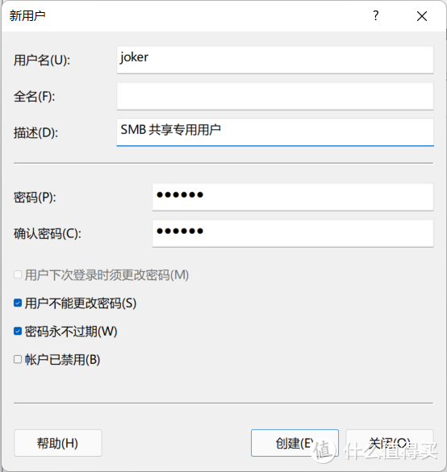
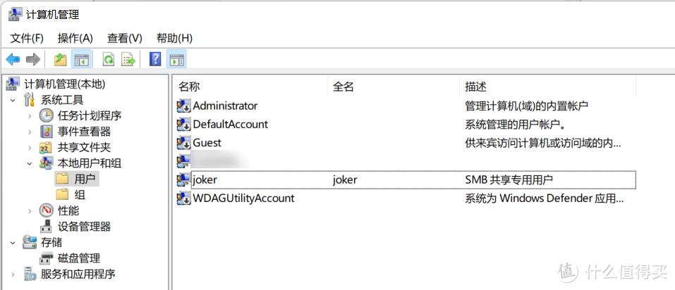
🐻 2. 设置网络共享和系统安全的相关设置
2.1 分配用户权限
设置好之后，joker 用户就无法本地登录到系统，同时也无法通过远程桌面的形式登录到本机，
目的就是让 joker 只能用来 SMB 共享。
cmd ⇒ secpol.msc 打开 “本地安全策略”设置窗口
本地策略⇒ 用户权限分配
- 从网络访问此计算机：只有授权的用户能够通过网络来访问到本机上的共享文件资源（包括共享的打印机）
- 拒绝本地登录：即不允许特定用户在本电脑上进行登录
- 拒绝通过远程桌面服务登录：即不允许此账户使用远程桌面登录到本系统
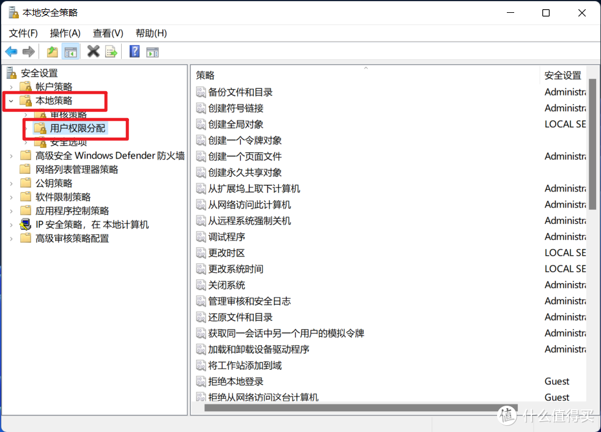
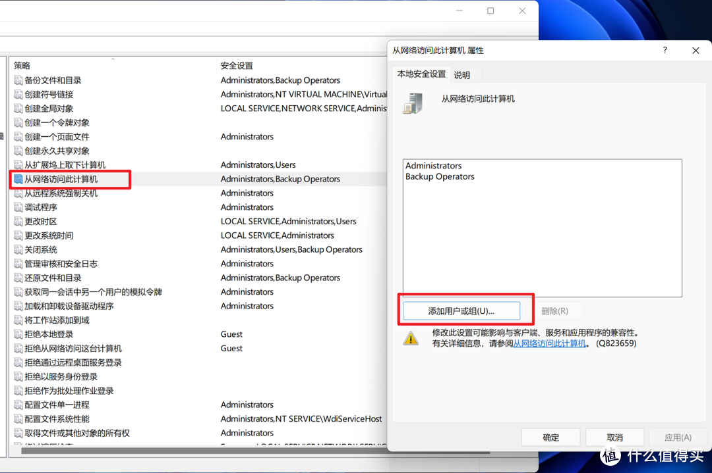
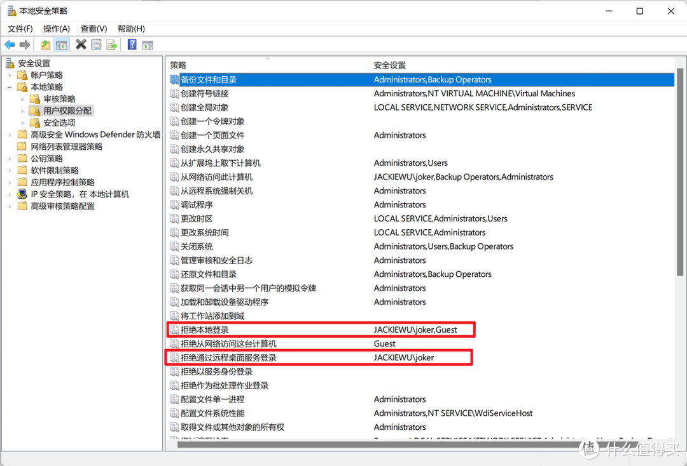

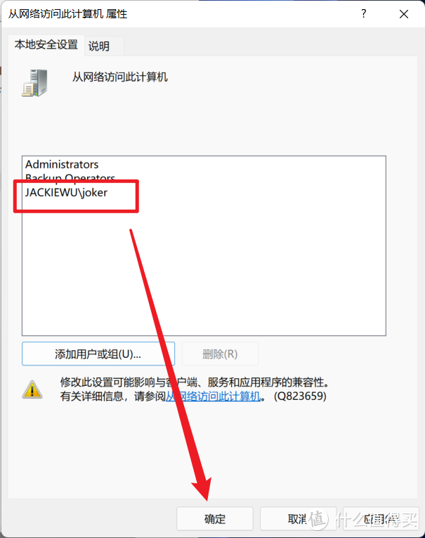
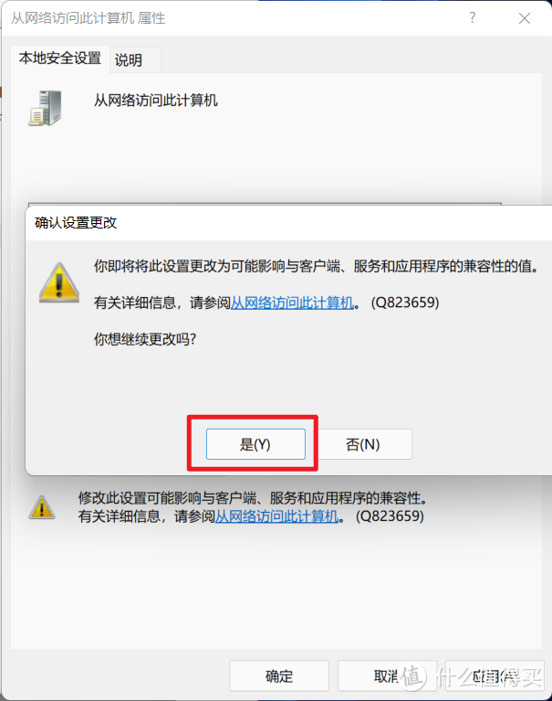

2.2 本地安全选项设置
cmd ⇒ gpedit.msc 打开“本地组策略编辑器
windows设置⇒ 安全设置⇒ 本地策略⇒ 安全选项⇒ 已禁用
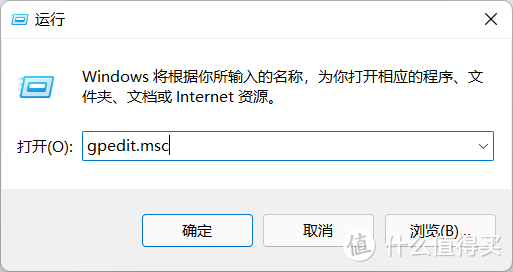
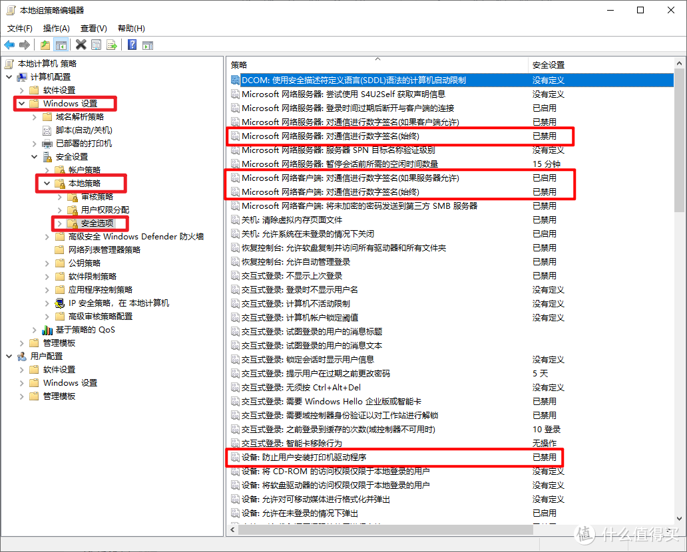
（1）Microsoft网络服务器端：对通信进行数字签名(始终) —— 禁用
默认情况下此项设置处于禁用状态，一般情况下也不需要打开。
此项设置用来确定 SMB 的数据包是否需要进行数字签名（类似于加密的意思），用来防止中间人攻击。比如说当我们设置了一个文件夹的 SMB 共享，那么当网络里面的其他人（相当于客户端）来想要访问我们的这个文件夹时，我们（相当于服务端）就会要求其他人也开启 SMB 数字签名的功能，否则我们不允许他们来访问我们的文件夹（不允许建立连接）。对于一般人来说是不需要开启的，除非你有很明确的理由。
（2）Microsoft网络客户端：对通信进行数字签名(始终) —— 禁用
默认情况下是关闭的，建议不要打开。如果开启了，并且服务器端没有启用数字签名，那么将无法实现访问 —— 因为我们坚持要对 SMB 数据包进行数字签名，不签名不访问。
（3）Microsoft网络客户端：对通信进行数字签名(如果服务器允许) —— 启用
建议打开，原因是我们在访问别人的 SMB 共享文件夹时，如果对方（服务器端）要求数字签名，那么如果此项设置没有启用，对方的服务器就不会允许我们（客户端）进行连接。
Important
“网络访问：本地账户的共享和安全模型” 设置为 “经典-对本地用户进行身份验证，不改变其本来身份”
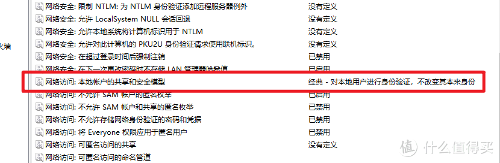
2.3 禁用 “启用不安全的来宾登录”
默认情况下，在 SMB2 和 SMB3 版本中，Windows 10 / 11 系统下是禁用此服务的，
如果开启了建议关闭，步骤如下：
cmd ⇒ gpedit.msc 打开“本地组策略编辑器
管理模板⇒ 网络⇒ lanman工作站⇒ 启用不安全的来宾登录⇒ 已禁用
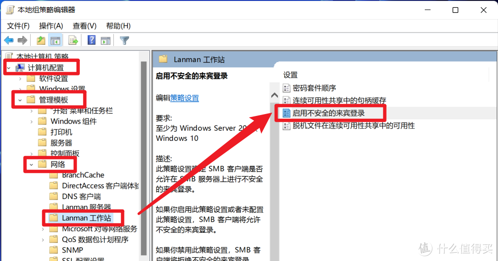

为什么要禁用？
在使用 SMB1 协议去共享文件时，虽然别人访问你的共享文件时 SMB1 会去验证访问者提供的用户证书是否有效，但是如果验证此证书为无效之后，SMB1 将会尝试开启“来宾”（guest）登录模式，允许访问者以“来宾”（guest）的身份进行登录。
下图产生的错误，就是因为我们禁用了“来宾”身份的登录，
但是不要认为这是不好的结果，恰恰相反，禁用此项功能就是为了实现更好地保护SMB 共享资料
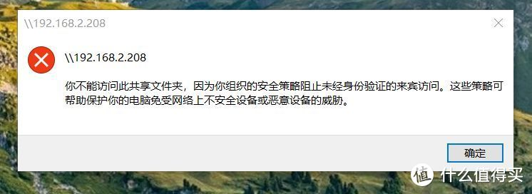
🐻 3. “网络和共享中心”：开启有保护的共享
打开共享设置：
3.1. 启用 “网络发现”：其实可以不用开启
当你勾选此项设置，那么当你在使用“网络”面板时就能发现同局域网下面的其他主机
其实这一项设置不开启也是没问题的，不影响我们去做 SMB 共享，而且关闭此项设置能将我们从其他 Windows 主机的网络面板中隐藏起来，提高安全性。
3.2. 启用 “文件和打印机共享”
如果不开启，是无法实现 SMB 共享的，因此需要启用
3.3. 启用 “密码保护“
这就不必多说了，密码保护必定要开启。
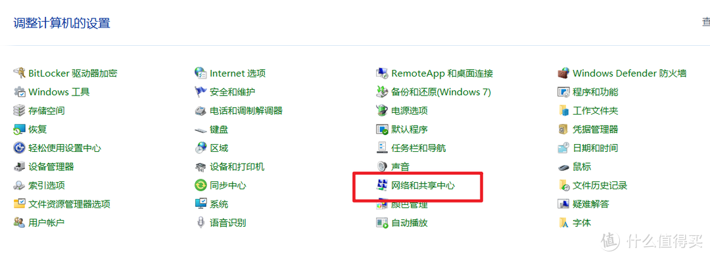

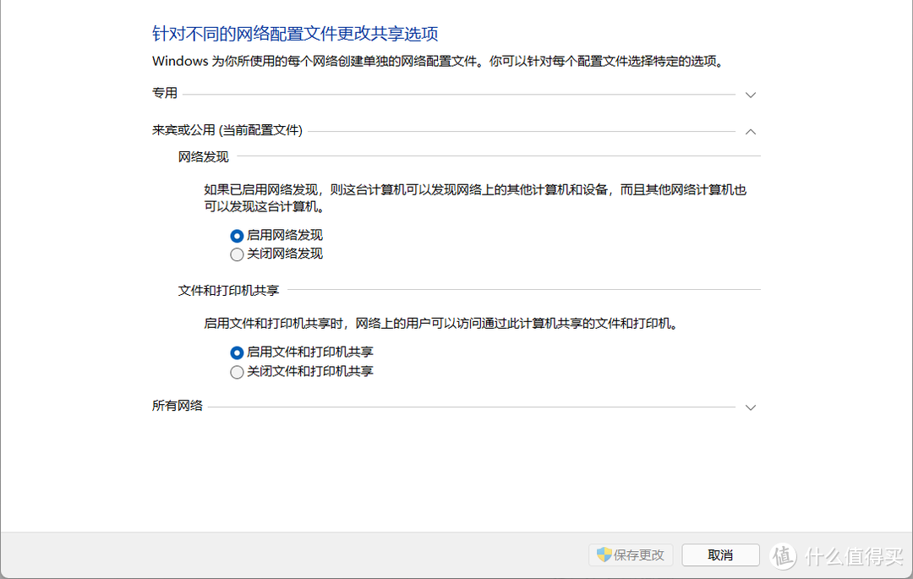
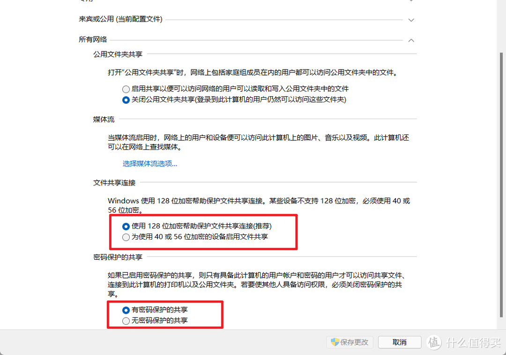
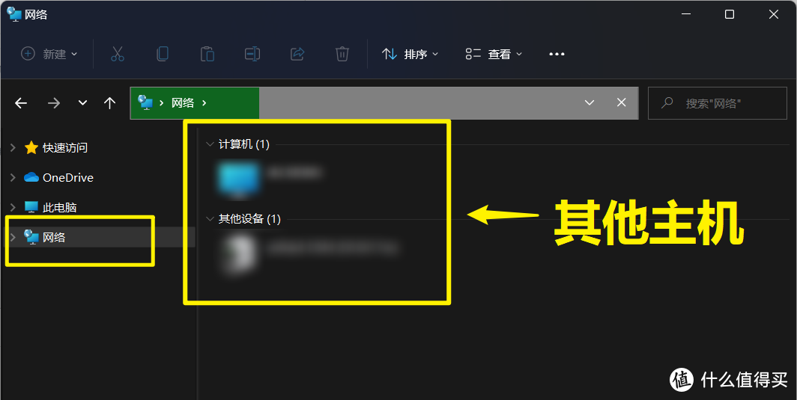
3.4 . 设置文件夹
这里我们新建了一个 "share" 文件夹，我们将对此文件夹开启共享：
右键文件夹，点击“属性”右键文件夹，点击“属性”，点击“高级共享”
删除 Everyone 用户，添加上述新建用户
我们可以在资源管理器的地址栏中输入此地址来访问，并且此文件夹只有 "joker" 用户以及我们管理员用户才能进行访问
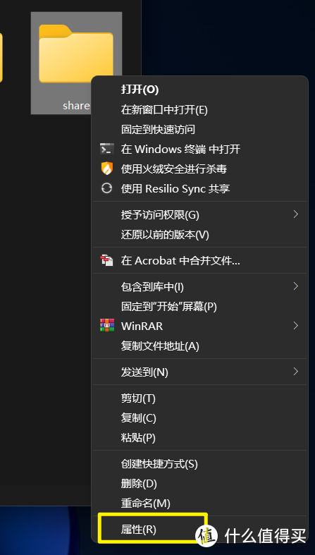

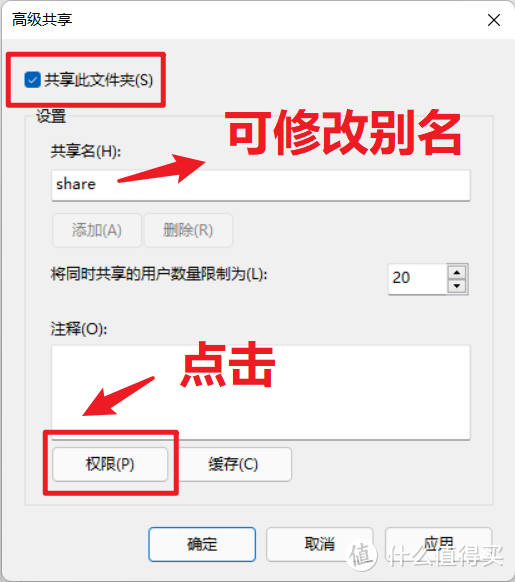

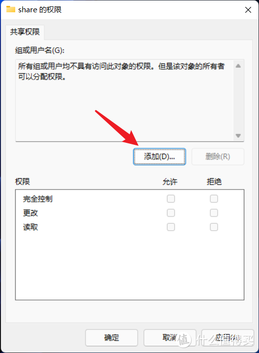
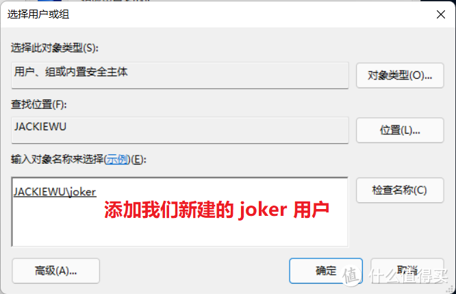
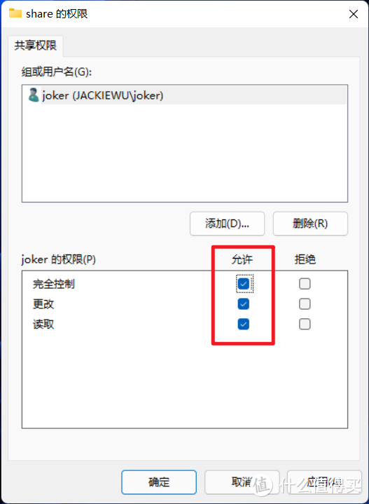

查看共享的文件
cmd ⇒ net share
或者cmd ⇒ fsmgmt.msc
或者cmd ⇒ compmgmt.msc
🐻 4.删除 %User% 默认共享
查看共享的文件
cmd ⇒ net share ＜共有名＞ /d